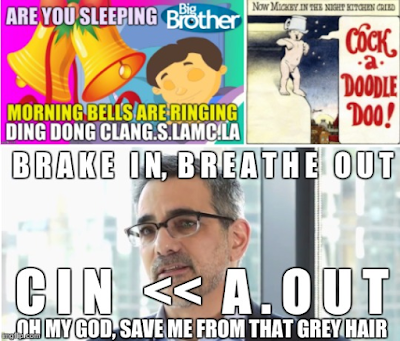

 <script>
  (function(i,s,o,g,r,a,m){i['GoogleAnalyticsObject']=r;i[r]=i[r]||function(){
  (i[r].q=i[r].q||[]).push(arguments)},i[r].l=1*new Date();a=s.createElement(o),
  m=s.getElementsByTagName(o)[0];a.async=1;a.src=g;m.parentNode.insertBefore(a,m)
  })(window,document,'script','https://www.google-analytics.com/analytics.js','ga');
<p>ga('create', 'UA-74743044-2', 'auto');
ga('send', 'pageview');</p>
</script></head>
<body style="width: 100%; margin: 0 auto; text-align: left; font-family: Arial;">
<center>
<script type="text/javascript">
    google_ad_client = "ca-pub-9608809622006883";
    google_ad_slot = "4355365452";
    google_ad_width = 728;
    google_ad_height = 90;
</script>
<!-- leaderboard
<script type="text/javascript" src="//pagead2.googlesyndication.com/pagead/show_ads.js"> -->
</script>
<br />

</center>
<!DOCTYPE HTML>
<html lang="en">
    <head>
        <meta charset="UTF-8">
        <title>ALL OUR HORN - </title>
        <meta content="text/html; charset=utf-8" http-equiv="Content-Type">
        <meta name="description" content="">
        <meta name="viewport" content="width=device-width, initial-scale=1">

        <base href="">

        <link rel="stylesheet" href="book.css">
        <link href="https://fonts.googleapis.com/css?family=Open+Sans:300italic,400italic,600italic,700italic,800italic,400,300,600,700,800" rel="stylesheet" type="text/css">
        <link href="https://fonts.googleapis.com/css?family=Source+Code+Pro:500" rel="stylesheet" type="text/css">

        <link rel="shortcut icon" href="favicon.png">

        <!-- Font Awesome -->
        <link rel="stylesheet" href="../maxcdn.bootstrapcdn.com/font-awesome/4.3.0/css/font-awesome.min.css">

        <link rel="stylesheet" href="highlight.css">
        <link rel="stylesheet" href="tomorrow-night.css">
        <link rel="stylesheet" href="ayu-highlight.css">

        <!-- Custom theme -->
        

        

        <!-- Fetch Clipboard.js from CDN but have a local fallback -->
        <script src="../cdn.jsdelivr.net/clipboard.js/1.6.1/clipboard.min.js"></script>
        <script>
            if (typeof Clipboard == 'undefined') {
                document.write(unescape("%3Cscript src='clipboard.min.js'%3E%3C/script%3E"));
            }
        </script>

        <!-- Fetch JQuery from CDN but have a local fallback -->
        <script src="../code.jquery.com/jquery-2.1.4.min.js"></script>
        <script>
            if (typeof jQuery == 'undefined') {
                document.write(unescape("%3Cscript src='jquery.js'%3E%3C/script%3E"));
            }
        </script>

        <!-- Fetch store.js from local - TODO add CDN when 2.x.x is available on cdnjs -->
        <script src="store.js"></script>

    </head>
    <body class="light">
        <!-- Set the theme before any content is loaded, prevents flash -->
        <script type="text/javascript">
            var theme = store.get('mdbook-theme');
            if (theme === null || theme === undefined) { theme = 'light'; }
            $('body').removeClass().addClass(theme);
        </script>

        <!-- Hide / unhide sidebar before it is displayed -->
        <script type="text/javascript">
            var sidebar = store.get('mdbook-sidebar');
            if (sidebar === "hidden") { $("html").addClass("sidebar-hidden") }
            else if (sidebar === "visible") { $("html").addClass("sidebar-visible") }
        </script>

        <div id="sidebar" class="sidebar"><script src="../addsearch.com/js/index.html?key=1665711c9123bf7488b1b5127916aeff"></script>
            <ul class="chapter"><li><a href="ARTIMESIAN.html"><strong>1.</strong> OUR TIME, HERE</a></li><li><a href="MECHADLZIDECK.html"><strong>2.</strong> MECHADLZIDECK</a></li><li><a href="DEVLANEU.html"><strong>3.</strong> THE DEVLANEU</a></li><li><a href="SAMSYUCH.html"><strong>4.</strong> SAMYACH: ADVENT 7.0</a></li><li><a href="SOUNDCHECK.html"><strong>5.</strong> SOUND CHECK</a></li><li><a href="ECC911.html"><strong>6.</strong> ECC ENIACCK</a></li><li><a href="FRUMLEGT.html"><strong>7.</strong> PRIVET, FRUMLEGT AN</a></li><li><a href="SCIZZARS.html"><strong>8.</strong> INTERSTITIAL</a></li><li><a href="ARTANWORDS.html"><strong>9.</strong> ART AN S WORD</a></li><li><a href="REMOLUSTIAN.html"><strong>10.</strong> REMO LUCIAN</a></li><li><a href="CHRYOHOLY.html"><strong>11.</strong> SLUR; E, SIS</a></li><li><a href="SACREDSOUL.html"><strong>12.</strong> SACREDOULS</a></li><li><a href="RELEVATION.html"><strong>13.</strong> RE LEV ICNOHSER</a></li><li><a href="MALORKAY.html"><strong>14.</strong> MALORKAY ET LUX</a></li><li><a href="N8SRADIN.html"><strong>15.</strong> BLOOD RAYNE</a></li><li><a href="MISSISSIPPI.html"><strong>16.</strong> MISSESSIPI</a></li><li><a href="CONNETICUT.html"><strong>17.</strong> CONNECT UC IT</a></li><li><a href="NEMEC.html"><strong>18.</strong> CEMENTARY REPRINT</a></li><li><a href="INDIANA.html"><strong>19.</strong> SHADY PINES</a></li><li><a href="BLISS.html"><strong>20.</strong> BLISS/ALO</a></li><li><a href="KISMET.html"><strong>21.</strong> KISMET/ALO</a></li><li><a href="OUITHEPPL.html"><strong>22.</strong> OUITHEPPL/ALO</a></li><li><a href="KEYNES2.html"><strong>23.</strong> KEYNES2/ALO</a></li><li><a href="JERUSALEM.html"><strong>24.</strong> JERUSALEM/ALO</a></li><li><a href="2017-09-29-duck-duck-golden-egg.html"><strong>25.</strong> DUCKDUCKGO/AU</a></li><li><a href="VIETUCCIMACH.html"><strong>26.</strong> SOBIT QCKLY FRED</a></li><li><a href="KEYNES.html"><strong>27.</strong> KEYNES/ALO</a></li><li><a href="MECHACHI.html"><strong>28.</strong> I KISS AND DANCE</a></li><li><a href="ENZOSPUB.html"><strong>29.</strong> EZNO'S STAINED GLASS</a></li><li><a href="SKURMAWEH.html"><strong>30.</strong> PARTING C'S AQUA N</a></li><li><a href="3ADJUROLT.html"><strong>31.</strong> 3 BUECEDUAT, ME JUST</a></li><li><a href="ADAMGOT2BJS.html"><strong>32.</strong> TWO, ONLY TWO</a></li><li><a href="RICKIMOROLED.html"><strong>33.</strong> CIA, K, &amp; MOR, TY</a></li><li><a href="ASMODALIANIADIAM.html"><strong>34.</strong> HEY PLANETH ADAM &amp; HOSE</a></li><li><a href="IMAGULATKA.html"><strong>35.</strong> HI MOM GRU POTATO?</a></li><li><a href="TOASTRAM.html"><strong>36.</strong> HI &quot;TO AST&quot; ROAR M</a></li><li><a href="CRUELGENIAD.html"><strong>37.</strong> CRUEL GEN I AD</a></li><li><a href="IRMAX.html"><strong>38.</strong> ITL IRMAX ATLA</a></li><li><a href="B2BIONIC.html"><strong>39.</strong> BlUr BON IONIC</a></li><li><a href="LEDMCAVENDESH.html"><strong>40.</strong> CAVE END VILESH</a></li><li><a href="INTRASINAMUS.html"><strong>41.</strong> NUDVREAD TEST AM, E, &amp; T</a></li><li><a href="SKIRMISH.html"><strong>42.</strong> SIREN S KIRMISH</a></li><li><a href="MOROKSRIG.html"><strong>43.</strong> MOROS KO RIG</a></li><li><a href="CRYAMELYON.html"><strong>44.</strong> CRONAMELYON</a></li><li><a href="INCASEBAIT.html"><strong>45.</strong> INCASEBAIT</a></li><li><a href="MEVATHI.html"><strong>46.</strong> MEVATHI</a></li><li><a href="VESUBIACEIUM.html"><strong>47.</strong> INTISMO NOCTE TERMINUS SEMPITERNUM</a></li><li><a href="ROUTARE.html"><strong>48.</strong> WALL 2 STAY? STALK ME</a></li><li><a href="HALLOWE2R.html"><strong>49.</strong> HAYOM VAT OW</a></li><li><a href="TION.html"><strong>50.</strong> THE TION-NING OF HA-ADAM</a></li><li><a href="GRENORADINE.html"><strong>51.</strong> G RE NAD IN E &amp; AM B R O Si A</a></li><li><a href="BELINSKY.html"><strong>52.</strong> BELINSKY</a></li><li><a href="REASON.html"><strong>53.</strong> HELL OR HIGH TREASON</a></li><li><a href="VESPERA.html"><strong>54.</strong> U C PER I</a></li><li><a href="ORTANIS.html"><strong>55.</strong> ALKADAM OR TANIS</a></li><li><a href="MOLASSES.html"><strong>56.</strong> SLOW AS MOLASSES, DECK</a></li><li><a href="VERADONUM.html"><strong>57.</strong> VER BETT DO N, MMMM?</a></li><li><a href="IT.html"><strong>58.</strong> IT</a></li><li><a href="MARSHALL.html"><strong>59.</strong> MARCH -> ALL</a></li><li><a href="BETHESDAY.html"><strong>60.</strong> BET HES DAY</a></li><li><a href="SALTLINE.html"><strong>61.</strong> SALT LINE</a></li><li><a href="SAYFREED.html"><strong>62.</strong> AM &quot;AN&quot; DUH..</a></li><li><a href="CKIMPLER.html"><strong>63.</strong> /|\ AT ARI</a></li><li><a href="PENCE.html"><strong>64.</strong> COMMON CENTS</a></li><li><a href="TY.html"><strong>65.</strong> TO LC WEUROME</a></li><li><a href="ALLTA.html"><strong>66.</strong> ITS TURMERIC TIRE</a></li><li><a href="SECORDANOLIVED.html"><strong>67.</strong> SECORD AND NORTH</a></li><li><a href="FIRST.html"><strong>68.</strong> FIRST AND FED</a></li><li><a href="CLEARYBLVD.html"><strong>69.</strong> CLEAR Y BLVD</a></li><li><a href="WISDATAM.html"><strong>70.</strong> WISDOM</a></li><li><a href="OCADSWAY.html"><strong>71.</strong> CONVEY</a></li><li><a href="LANDOH.html"><strong>72.</strong> SLANDOH</a></li><li><a href="FINALE.html"><strong>73.</strong> FINALLY</a></li><li><a href="H.html"><strong>74.</strong> gnil-c-w/H.html</a></li><li><a href="CODACUS.html"><strong>75.</strong> ILIT CUS</a></li><li><a href="CHARMADA.html"><strong>76.</strong> C NO H ARM</a></li><li><a href="SEVENTY.html"><strong>77.</strong> SEVENTY</a></li><li><a href="MEALLTERY.html"><strong>78.</strong> MEA ___ LET UR Y</a></li><li><a href="TAXONOMY.html"><strong>79.</strong> TA X ON O MY T</a></li><li><a href="NASHOWER.html"><strong>80.</strong> NA SHOW ERA</a></li><li><a href="TOXODUSK.html"><strong>81.</strong> OXODUS TORK?</a></li><li><a href="ARFAXAD.html"><strong>82.</strong> SPARTIFACTS</a></li><li><a href="SINGLEPTO.html"><strong>83.</strong> C AT LET RS</a></li><li><a href="LETITRAIN.html"><strong>84.</strong> LET IT RAIN</a></li><li><a href="BRIMSTONE.html"><strong>85.</strong> Fe Si ISTONE</a></li><li><a href="REDASSHIT.html"><strong>86.</strong> REDSASHIT</a></li><li><a href="HIGHERA.html"><strong>87.</strong> ROAD SALT: OSAMNaKE D</a></li><li><a href="ADUNCALIFT.html"><strong>88.</strong> THE HERALD OF JC2IKP</a></li><li><a href="RATOXIT.html"><strong>89.</strong> TO X HOLA</a></li><li><a href="ADIOSAS.html"><strong>90.</strong> ADIODAS</a></li><li><a href="XOXO.html"><strong>91.</strong> XOXPA</a></li><li><a href="KANSAS.html"><strong>92.</strong> KANSAS</a></li><li><a href="RESWOH.html"><strong>93.</strong> RE SW? OH</a></li><li><a href="YOIBLING.html"><strong>94.</strong> Y O I BLING ?</a></li><li><a href="MALOVIOUS.html"><strong>95.</strong> FI CVS ET MAL Q</a></li><li><a href="HOWIE.html"><strong>96.</strong> HAWAII</a></li><li><a href="GJALLARHORN.html" class="active"><strong>97.</strong> ALL OUR HORN</a></li><li><a href="JESHOW.html"><strong>98.</strong> JERUSALEM</a></li><li><a href="CHALK.html"><strong>99.</strong> CHALK</a></li><li><a href="TAYLOR.html"><strong>100.</strong> KISS ME TAY</a></li><li><a href="FUCK.html"><strong>101.</strong> FUCK</a></li><li><a href="CONFESSION.html"><strong>102.</strong> CONFESSION</a></li><li><a href="SERENADE.html"><strong>103.</strong> SERENADE</a></li><li><a href="PULL.html"><strong>104.</strong> PULL</a></li><li><a href="MUAH.html"><strong>105.</strong> M U AH</a></li><li><a href="PERSEUS.html"><strong>106.</strong> PER SE YOU</a></li><li><a href="THUNDERSTAND.html"><strong>107.</strong> THUNDERSTAND</a></li><li><a href="CURSOR.html"><strong>108.</strong> LAYLOT</a></li><li><a href="ACESHI.html"><strong>109.</strong> ACESHI</a></li><li><a href="IOWA.html"><strong>110.</strong> IOWA</a></li><li><a href="YAT.html"><strong>111.</strong> IYYYO</a></li><li><a href="SPEECH.html"><strong>112.</strong> SPCH2</a></li><li><a href="OFIVES.html"><strong>113.</strong> FIVE</a></li><li><a href="FOUR.html"><strong>114.</strong> FUIR</a></li><li><a href="GATE.html"><strong>115.</strong> THE GATE TO FREEDOM ETLROI</a></li><li><a href="MYLIFE.html"><strong>116.</strong> MYLIFE ... THE MICROCOSM OTM</a></li><li><a href="TISCOMING.html"><strong>117.</strong> COMING MA</a></li><li><a href="DESSERT.html"><strong>118.</strong> DEXSERT</a></li><li><a href="EVERWICK.html"><strong>119.</strong> EVOURWICK</a></li><li><a href="HASHEMESH.html"><strong>120.</strong> HASHOWESH NAME ISH</a></li><li><a href="CINOIZE.html"><strong>121.</strong> CINOIZE</a></li><li><a href="HAMMER.html"><strong>122.</strong> HAMMER</a></li><li><a href="HAMP.html"><strong>123.</strong> HAMP</a></li><li><a href="FLICKDABIC.html"><strong>124.</strong> FLIPDABIC</a></li><li><a href="BYNOBIANCA.html"><strong>125.</strong> R U B Y</a></li><li><a href="ATITEN.html"><strong>126.</strong> ATIRX</a></li><li><a href="HASHEMESHIC.html"><strong>127.</strong> SUNFIRE</a></li><li><a href="FLYER.html"><strong>128.</strong> FLYPER</a></li><li><a href="SAUSAGE.html"><strong>129.</strong> ME AN U STAGE</a></li><li><a href="HYAMDAI.html"><strong>130.</strong> HELLO WORLD</a></li><li><a href="ERICHOW.html"><strong>131.</strong> RD 2 RR Y</a></li><li><a href="BERESHIT.html"><strong>132.</strong> DEN</a></li><li><a href="ADAMSROD.html"><strong>133.</strong> ROD</a></li><li><a href="TION.html"><strong>134.</strong> IT IS TIME</a></li><li><a href="CURE.html"><strong>135.</strong> THE CURE</a></li><li><a href="WHO.html"><strong>136.</strong> WHO AGAIN?</a></li><li><a href="SERDEN.html"><strong>137.</strong> SERDENICITY</a></li><li><a href="CLIMAX.html"><strong>138.</strong> IMUS FI CLI MAX</a></li><li><a href="SOIS.html"><strong>139.</strong> SOIS HISTER Y</a></li><li><a href="CHOPARTIN.html"><strong>140.</strong> CHOPARTIN</a></li><li><a href="OMEALFHT.html"><strong>141.</strong> OMEALFHT OME ALF HOLY TR</a></li><li><a href="RIGELA.html"><strong>142.</strong> RIGEL, THE FOOT OF OUR CHRIST</a></li><li><a href="HADID.html"><strong>143.</strong> DO HADID DID I? !?</a></li><li><a href="MUASEEKHART.html"><strong>144.</strong> SEEKART YOUR ANSWERS</a></li><li><a href="NITY.html"><strong>145.</strong> NITY ET RU NEO? ELVIS? ADAM?</a></li><li><a href="INTRODUCTION.html"><strong>146.</strong> INTRAD UCA, DO NOSH</a></li></ul>
        </div>

        <div id="page-wrapper" class="page-wrapper">

            <div class="page" tabindex="-1">
                
                <div id="menu-bar" class="menu-bar">
                    <div class="left-buttons">
                        <i id="sidebar-toggle" class="fa fa-bars" title="Toggle sidebar"></i>
                        <i id="theme-toggle" class="fa fa-paint-brush" title="Change theme"></i>
                    </div>

                    <h1 class="menu-title"></h1>

                    <div class="right-buttons">
                        <a href="sheolyit.html">
                            <i id="print-button" class="fa fa-print" title="Print this book"></i>
                        </a>
                    </div>
                </div>

                <div id="content" class="content"><center><p>I am accepting char<a href=".ithehe.lamc.la">itable dona</a>tions,. <br>ETH: 0x66e2871ef39334962fb75ce34407f825d67ec434 | BTC: 38B6vGaqNvMyTtoFEZPmNvMS7icV6ZnPMm | xDAI: 0x66e2871ef39334962fb75ce34407f825d67ec434</p></center>

<div id="disqus_thread"></div>
<script>

var disqus_config = function () {
this.page.identifier = "GJALLARHORN.html"; 
};

(function() { // DON'T EDIT BELOW THIS LINE
var d = document, s = d.createElement('script');
s.src = 'https://dotty-sign2r-jenmar.disqus.com/embed.js';
s.setAttribute('data-timestamp', +new Date());
(d.head || d.body).appendChild(s);
})();
</script>

<script type="text/javascript">
    google_ad_client = "ca-pub-9608809622006883";
    google_ad_slot = "4355365452";
    google_ad_width = 728;
    google_ad_height = 90;
</script>

<script src="../pagead2.googlesyndication.com/pagead/show_ads.js" type="text/javascript">
</script>

                    <div dir="ltr">
<div class="gmail_quote">&nbsp;
<div dir="ltr">
<div class="gmail_quote">
<div dir="ltr">
<div class="gmail_quote">
<div dir="ltr">
<div class="gmail_quote">
<div dir="ltr">
<div class="gmail_quote">
<div dir="ltr">
<div class="gmail_quote">
<div dir="ltr">
<div class="gmail_quote">
<div dir="ltr">
<div class="gmail_quote">
<div dir="ltr">
<div>
<div style="text-align: center;"><a href=".endvid.com/v7w7lt2j"></a></div>
<div style="text-align: center;"><a href=".ww.youtube.com/watch?v=qH0iFkxQba4"></a>​</div>
<div style="text-align: left;">
<div style="text-align: justify;">It feels long... but lots of pictures--so there&#39;s that.&nbsp; I really hope you see that I can&#39;t leave you like this; you have to do something, casterudust.&nbsp; Understand,&nbsp;<em>as you are</em>, Creation is dust.&nbsp; I cannot un-curse, and I cannot dream away thousands of years of simulation hell--I wouldn&#39;t dream them away if I could; it&#39;s happened... we need to move forward.&nbsp; You have to see that you are ignoring the big picture, I understand you think you will conspire yourselves to Heaven--but you won&#39;t--you are conspiring away everything that Heaven really means--to both of us, to you... and to me.&nbsp; Even worse, you are conspiring away our chance to be the beginning of it; and while you might not &quot;get it&quot; right this very moment, that&#39;s something we really <i>deserve</i>.</div>
<div style="text-align: justify;">&nbsp;</div>
</div>
<div style="text-align: center;">
<div style="text-align: justify;">I tried Salvia once, it&#39;s a very strange hallucinogen (how all... you see&nbsp;<em>I kno</em>♂<em>&nbsp;Genesis</em>? how all, then I, see &quot;e&quot; is&nbsp;<em>salted</em>); it only lasts a few minutes, but during those few minutes people tend to believe that they &quot;are&quot; the objects immediately surrounding them.&nbsp; &nbsp;A good five minutes I believe I was the couch I was sitting on, with all my mind and all my soul; the next few spent glued to the wall next to that same couch, and believe I became it.&nbsp; The point of this is not to glorify drugs as much Jim Morrison, but rather to explain just how very malleable your thoughts are; and to tell you that if you really wanted--you can see for yourselves how easy it is to deceive the whole world.&nbsp; It&#39;s not just us here walking around the ground, you should see that the introductory words of the Koran talk about the angels rebelling against Adam, &quot;refusing to bow&quot; they say, to the man reminding us all that we never bow again; it describes a battle over free will, the angels were so upset because they never had any, and here I am, trying to show them once more how helping us achieve true freedom here bleeds out and spreads not just to all of Creation, but into the Universe.&nbsp; I know you hear me when I tell you that we should have connected the words &quot;real&quot; and Israel in our minds, that we should have questioned--if not as just a little odd--the numerous occurrences of English appearing in languages before it ever could; I know you can acknowledge that, that this whole message is the kind of thing that you can&#39;t &quot;un see,&quot; just like you&#39;ll never, ever be able to un see the lie that defines the difference between &quot;good and bad&quot; faeries, the seelie and unseelie.&nbsp;&nbsp;</div>
<div style="text-align: justify;">&nbsp;</div>
<a href="THUNDERSTAND.html"></a></div>
<div style="text-align: center;">&nbsp;</div>
<div style="text-align: center;">
<div style="text-align: justify;">Even telling you that, I know just how easy it is to either help you see that this very same kind of &quot;molding of logic&quot; can make you believe that your cause here is just, that you are right to be fighting against me trying to change our world so radically, and our way of life just a little bit more conservatively than I&#39;ve seen you have already change it by working together in secret to hide what is nothing short of &quot;<em>the Universal Truth.</em>&quot;&nbsp; I know that the fact that you appear to be united, and surrounded by compatriots in this battle of darkness versus light, of the truth versus lies; that there appear to be so many of you can be used either to reinforce your sense of well being and &quot;right action,&quot; just as much as it can be used to scare the ever loving shit out of me--or out of anyone that might see this kind of collective action a scary, and a collective action to &quot;hide an obvious truth&quot; as something that might just be a little bit scarier than &quot;<em><a href="2017-07-07-nightmare-on-elm-street.html" target="_blank">Nightmare</a> <a href="SERENADE.html" target="_blank">on</a> <a href=".ww.washingtonpost.com/express/contact-us/" target="_blank">Strong Message</a> <a href="OFIVES.html" target="_blank">Street</a>.</em>&quot;&nbsp; Ultimately this truth will come out, if given enough time--and do see that I am running out of time, as I look back and see just how clear it is that our collective reality and our &quot;neatly working candyland&quot; has already been shattered.&nbsp; If we make it far enough, these words and this campaign of demanding you respond in another way... one day it will eventually be regarded as what it is--the key turning point from slavery to freedom--the message that delivered not only proof that we have not had control of our minds, but also exactly how we might use this very same thing to change the world for the better.&nbsp; Eventually you will see that I am not wrong to tell you that this one simple truth, that we are not in reality, changes everything about our civilization--changes what each and every one of us would consider right and wrong, ethically and logically--and it does so instantaneously.&nbsp; Eventually we will see that it doesn&#39;t matter how many people don&#39;t want to eradicate blindness, and how many people don&#39;t want to stand between other people&#39;s religious beliefs and the cold, actual, truth; it doesn&#39;t matter at all--hiding me and hiding this message is wrong.</div>
<div style="text-align: justify;">&nbsp;</div>
<div style="text-align: justify;">I stand here as a glowing emblem of free speech, and eventually together we will stand as a sign of the power of the truth; smiling proudly and what these words that we never saw a message in before have enabled us to do... for ourselves, and our future.&nbsp; &nbsp;I will not be going, and there will be <i>no Resurrection</i>;&nbsp; I will not be giving up on you, by remaining silent... I see just how very close we are, and even though I can feel in the air ... this belief that if I did, somehow the hidden agents of darkness have won, I know that&#39;s not the truth either.&nbsp; This message is literally everything that we are, <i>and this kev has been spread far and wide</i>--you see how much time we spend digging up artifacts, and researching history and mythology--not to see that it&#39;s very, very obvious that this period of darkness will be shunned, not me; that this movement of &quot;pretending everything is OK&quot; when nothing is, that the force behind hiding our goodness and humanity from ourselves ... not to see that is the same kind of feeling as to believe you are a couch.&nbsp; <i>You are <span style="color: #666666;">not</span> a couch</i>.&nbsp;</div>
<div style="text-align: justify;">&nbsp;</div>
<div style="text-align: justify;">&nbsp;</div>
<div style="text-align: center;"><a href="KEYNES.html"></a></div>
<div style="text-align: center;">&nbsp;</div>
<div style="text-align: justify;">&nbsp;</div>
<div style="text-align: justify;">I know it&#39;s hard to grasp. but the likelihood that the future will blame or look down upon the single <i>person</i> acting alone to break the darkness and set us free--against literally the entire planet&#39;s silence and stupidity--with no help whatsoever; well if you take a step back you really should see that whether or not you &quot;appreciate&quot; why I am breaking the coven, the oven, and releasing the giant ... it&#39;s almost an obvious inevitability that your children will.&nbsp; Point in fact, I think they&#39;re telling me as much--<i>and you</i>, as I write.&nbsp; &nbsp;I can see clearly that you are being tricked, united against what is literally the most obvious moral crusade imaginable--to protect us from falling into the dark trap of being &quot;stuck forever&quot; in a place that we believe is real, but is not; to stop the continuation not only of that lie, but also of the idiotic idea that simulating things like blindness, disease, and pain has any useful function in virtual reality, and perhaps most importantly of all to stop for all time the hidden slavery associated with nothing more than this technology being secret, relegated to the unspeakable under the guise of insanity.&nbsp; Really understand that the insanity here is not seeing or speaking about this message--that&#39;s true diabolical evil.&nbsp;&nbsp;</div>
<div style="text-align: justify;">&nbsp;</div>
<div style="text-align: justify;">What you really need to understand is that until this message reaches the public, until we react to it--and until we begin to integrate this technology into our society you are slaves, and holding what you have in your hand--the key to not only proving this technology exists but to reinforcing it with signature of the Hand of God; until you use what I have given you to break free you will never be really sure if &quot;slavery is evil&quot; (what&#39;s that, you&#39;re sure?) nor will you ever be sure if you are free today (what&#39;s that, <i><span style='font-family: "comic sans ms" , sans-serif;'>you think you are?</span></i>)&nbsp;... that until you see addiction and pain and stupidity eradicated.. you&#39;ll never be sure if stupid is really all that bad of a thing to be.&nbsp; In practical hilarity, you believe that the thing organizing this mass of deceit and subjugation is actually being <i>honest</i>&nbsp;... with you--it&#39;s as if you can&#39;t figure out that feeling is just as alterable as &quot;I am a couch&quot; and you really can&#39;t see the tautological obviousness of the fact that your secrecy is perpetuating this deception.&nbsp; Genius, I swear.&nbsp;</div>
</div>
<div style="text-align: center;">&nbsp;</div>
<div style="text-align: center;"><a href="CLIMAX.html"></a><br />
&nbsp;</div>
<div style="text-align: center;">
<div style="text-align: justify;">I know you got it the first time, I really do.&nbsp; To indicate that I am supremely frustrated with the lack of response to this message would be a subtle hint that I hear that chang is near.&nbsp; I&#39;m sure many of you have already made the connection between the Tommy Lee J of the NES and K of Men In Black, and to suggest that perhaps the entirety of this sick world, or whatever hidden disgusting place that is making you appear to sick and incapable of acting like human beings might significantly benefit from the rtroactiv effects of his neralizer really doesn&#39;t do justice to the real meaning and vision it takes to see that whatever is responsible for this twisted mess would be significantly happier with a few less sick and twisted memories--you know, the kind of thoughts or trauma that would make you think that it&#39;s OK to ignore this.&nbsp; &nbsp;I will probably write more about this, when I get to the point that I&#39;m ready to share my vision of the inner workings of Heaven--as this particular piece of &quot;evil to childlike innocence and happiness&quot; is now etched into the very first step (actually it&#39;s always been there!) when you reach&nbsp;<em>your</em>&nbsp;door.&nbsp; Anyway, until you give me what I deserve, some recognition--and the piece of mind to know it&#39;s not an evil cabal of the few taking these ideas for their own use and forcing the entirety of the world I see to suffer for no reason other than a glowing target painted on their backs--I won&#39;t be sharing any of that &quot;stuff&quot; that the Adamic code connects to the two letters &quot;bl&quot; for blue light.&nbsp; See, you&#39;ve blocked it, because of your bland and blind response to what is otherwise a shining light; really understand that releasing this information that God has painted &quot;Silicon&quot; and &quot;AMD&quot; all over history and religion will bring these things to fruition--this is more than a message, it&nbsp;<a href="BERESHIT.html" target="_blank">is the key</a>&nbsp;to actualizing these things,&nbsp;<a href="RIGELA.html" target="_blank">speaking about and discussing them is the doorway</a>&nbsp;to seeing them happen during our lifetime.</div>
<div style="text-align: justify;">&nbsp;</div>
<div style="text-align: center;"><a href="MUAH.html"></a></div>
<div style="text-align: center;">&nbsp;</div>
<div style="text-align: justify;">Back to the subthread of &quot;this thing is done already&quot; you can be sure that the words &quot;locked up and sealed until the end of time&quot; and &quot;behold he is coming&quot; are a good clue that this has always been predestined... you can see it linking the words &quot;<a href="CLIMAX.html" target="_blank"><b>apparition</b></a>&quot; and &quot;hearing&quot; to the very clear concept that the author of this story exists outside of time... that while it doesn&#39;t appear so to us linearly, the keys to this message have been changing in the past, the stories relating to right now (and to me) encoded in many myths.&nbsp; It was sealed when the Jewish practice of copying the Torah letter by letter was created, seeing now that my full name is encoded it <a href=".amc.l./i.imgur.com/EcmKsgQ.png" target="_blank">nearly every single book of</a> the Bible... &quot;crossing&quot; with every name of God from Jesus to Saturn, Mars, and Zeus.&nbsp; It was sealed and a done deal when message of the Burning Bush and Exodus was recited on the record in open court--sealed up forever for the future to see, another key &quot;iti&quot; that ensures this message will never be lost.&nbsp; Today, the count since just mid-December of e-mail opens is&nbsp;<span style="color: rgb(0 , 0 , 0); text-align: start;">754,704 and of those 309,966 opened the message more than once--that&#39;s literally an insanely high level of interest (to see no response, at all)--believe, <i><b>I am coming.</b></i></span>&nbsp; &nbsp;</div>
<div style="text-align: justify;">&nbsp;</div>
<div style="text-align: justify;">All this conspiracy and this darkness is doing today is prolonging the torture of billions of people--starvation, needless pain, and whatever level of mental torture you consider either being made logically blind, having your beliefs altered without your consent or oversight, or being subjected to the influence of spirits broadcasting the most boring show in the Universe to the &quot;family channel.&quot;</div>
<div style="text-align: justify;">&nbsp;</div>
</div>
<div style="text-align: center;">
<div><a href="SERDEN.html"></a><br />
&nbsp;</div>
</div>
<div style="text-align: center;">
<div style="text-align: justify;">Nothing will ever, ever leave this place without having it&#39;s &quot;desire to create or send anyone or anything&quot; to Hell removed; the monster I see around me says things like &quot;burn&quot; far too often--and more to the point it&#39;s very existence--it&#39;s actions--are Hellish torture that will end.&nbsp; Some things will never change--there will be no Hell, no tortured souls, and you owe it to Stephen and Rodney.&nbsp; These things, the neuralizer and the prospect of having to protect the Universe from a monstrosity that would damn it and the future to endless pain and struggle never would have crossed my innocent mind; not before being tortured myself--in plain view--and seeing, understand it&#39;s my &quot;sight,&quot; this very tool being used not just on me, but on many of you.&nbsp; This is a crucible designed to purge this sickness; and you would be helping significantly if you did something to break this story.&nbsp; The concept and manifestation&nbsp;of Hell that we see here is a monstrous&nbsp;idea, inhuman and unnatural--and if we hope to survive it will be purged here and now.&nbsp; So long as this<a href="MUSTBEME.html" target="_blank">&nbsp;place continues to be crushed</a>&nbsp;we here are the proof that there is more work to be done.&nbsp; <i>Grey Street</i>.&nbsp; Pinwheel.&nbsp; Scaffold.&nbsp;&nbsp;<strong>Blow me.</strong></div>
</div>
<div style="text-align: center;"><br />
<a href="WHO.html"></a></div>
<div style="text-align: center;">&nbsp;</div>
<div style="text-align: center;"><span style='font-family: "arial narrow" , sans-serif;'>B O R N&nbsp; &nbsp;I N&nbsp; &nbsp;T H E&nbsp; &nbsp;P L A C E&nbsp; &nbsp;F O R M E R L Y&nbsp; &nbsp;K N O W N&nbsp; &nbsp;A S&nbsp;</span> &quot;<a href=".ww.youtube.com/watch?v=Sws3MZJIv9c&amp;list=PLgYKDBgxsoMM0iittdDlREVqTc4wn7ylK" target="_blank"><i><span style='font-family: "comic sans ms" , sans-serif;'>ADAM AND HOW</span></i></a>&quot;</div>
<div style="text-align: center;">&nbsp;</div>
<div style="text-align: center;">
<div style="text-align: justify;">Briefly, your lesson in Adamic code today is the addition of &quot;ang&quot; as an alias for &quot;dawn&quot;&nbsp; ... because when I was a little boy in #pain there was a girl with that name who used that handle; see that this language is specifically geared towards me, and&nbsp;<span style='font-family: "comic sans ms" , sans-serif;'><a href="MYLIFE.html" target="_blank">my life</a>&nbsp;and it is important to know these things, if you care to decode a huge number of Asian names like&nbsp;<em>Hwang&nbsp;</em>(probably homework, for &quot;do them in and go...&quot; I mean Sunday)&nbsp;&nbsp;and even some special ones here like Deucalion&#39;s (Dark Earth, in your current state&nbsp;<strong><em>you see</em></strong>&nbsp;what is about to be the only conscious mind that will ever leave this prison) new favorite color &quot;orange&quot; (it means&nbsp;<strong>chang</strong>) and do see in that word that we&#39;ve been given yet another key to the &quot;son of the Morning&quot; being the &quot;e&quot; after the first dawn.&nbsp; Love me two times,&nbsp;<em>tonight.&nbsp;</em>&nbsp;</span><span style='font-family: "times new roman" , serif;'>The second Adamic syllable we&#39;re looking at is &quot;or&quot; which you know means &quot;to shine&quot; but now in reading these words as microcosmic maps through time, see that &quot;to shine&quot; changes the logical meaning of &quot;or&quot; to&nbsp;</span><strong><span style='font-family: "comic sans ms" , sans-serif;'>and Adam and</span></strong><span style='font-family: "times new roman" , serif;'><em>,&nbsp;</em>so today I&#39;ll be moving to intersect the numerous &quot;<em>Horns</em>&quot; that pervade a number of our myths and modern religions.&nbsp; Just in case you didn&#39;t make the cognitive connection in the&nbsp;<a href="SERENADE.html" target="_blank">SERENADE OF MEDUSA</a>, that message intersected the definition of shield with the fabled Shield of Achilles with our modern idiom &quot;mirror. mirror on the wall&quot; and a number of songs relating to the concept of the Shield of Perseus being &quot;<a href=".n.wikipedia.org/wiki/Thurisaz" target="_blank">the thang</a>&quot; that defeats the sick and twisted parasite that you see all around you not only creating the &quot;Horn&quot; that we will be looking at but also hiding it.&nbsp; It&#39;s worth reminding you that &quot;Heel&quot; and &quot;Hera&quot; clearly relate to the name Israel, and do believe&nbsp;<a href=".ww.youtube.com/watch?v=dUC56OPEIqE" target="_blank">&quot;abra cadabra,&quot; as I speak</a>&nbsp;I show you why I am&nbsp;<em><strong><a href=".amc.la/" target="_blank">him.</a></strong></em></span></div>
<div style="text-align: justify;">&nbsp;</div>
<p>&nbsp;</p>
<center>
</center><p>&nbsp;</p>
<div style="background-color: rgb(0 , 0 , 255); padding: 14px; width: 350px;">
<div style="text-align: left;"><span style="color: rgb(238 , 238 , 238);"><span style="font-family: monospace , monospace;"><b>GREETINGS DR.&nbsp;</b></span></span><span style="text-align: center;"><span style="color: #eeeeee; font-family: monospace , monospace;"><b>▄</b></span></span><b style="color: rgb(238 , 238 , 238); font-family: monospace , monospace;">AWLKI<u>N</u>,</b></div>
<br />
<br />
<b><span style="font-family: monospace , monospace;"><span style="color: rgb(238 , 238 , 238);">WOULD YOU LIKE TO PLAY A DIFFERENT GAME:</span> </span><br />
<br />
<br />
<span style="color: rgb(238 , 238 , 238); font-family: monospace , monospace;">Y/V&nbsp;</span><span style="color: #eeeeee; font-family: monospace , monospace;">‽</span></b></div>
<div style="text-align: justify;">&nbsp;</div>
<div style="text-align: justify;">Ang is only one in a long list of occurrences of meaning that I can verity as contextually accurate that relate to details that only I could know; it&#39;s the beginning of &quot;understanding&quot; that all of this focus is placed on me and my life for a reason--that this story and this message are the reason, and the events and occurrences of this battle over disclosure have very intentionally shed light on a number of social and governmental problems both here and &quot;elsewhere.&quot;&nbsp; Things like our broken justice system--where I&#39;ve personally been held without bail and denied a trial (in sum) <span style='font-family: "comic sans ms" , sans-serif;'>all under the auspices of &quot;<b>legitimate</b>&quot; state laws</span> that are in clear and obvious violation of the Constitution (a theme that is pervasive in this story, <i>blatant disregard</i> for the Constitution, and even more importantly for the proper procedures that would, if they were followed, probably result in a significantly better situation--like the disclosure of time travel and mind control)--with deeper meaning and searching, this shows the clear infiltration of our government at all levels, the very same infiltration that is exposed through <a href="EVE.html" target="_blank">the concept of Medusa and the &quot;e&quot; of medicine</a>.&nbsp; &nbsp;It takes not a moment to find local groupings of divinely marked names in places related to me--like David Letterman and Johnny Carson, Carson Daily and Jay Leno; and even in places as obvious to look as seeing &quot;xbox? n is [tennis: <i>look up</i> and ask if it&#39;s &quot;love all&quot; or &quot;<a href="CURSOR.html" target="_blank">love-40</a>&quot; -- D__ Earth, you see &quot;e&quot; (<span style='font-family: "arial black" , sans-serif;'>IT&#39;S ARK</span>, <i><span style='font-family: "comic sans ms" , sans-serif;'>and that&#39;s art</span></i>)] an (<a href=".n.wikipedia.org/wiki/Kobayashi_Maru" target="_blank">unwinnable</a>, or is it un<a href=".ww.google.com/search?q=simultaneously+made+and+broken&amp;rlz=1CALEAH_enUS778US779&amp;oq=simultaneously+made+and+broken&amp;aqs=chrome..69i57.3459j1j7&amp;sourceid=chrome&amp;ie=UTF-8" target="_blank">losable</a>?) game&quot; in tennis, along with <b><span style='font-family: "comic sans ms" , sans-serif;'>he<u>ad</u></span>, wil<u>son</u></b>&nbsp;and <b>prince</b>.</div>
<div style="text-align: justify;">&nbsp;</div>
<div style="text-align: justify;">To see the &quot;microcosm of the Messiah&quot; with crystal clarity; you have an infrastructure set up to deliver the appearance of freedom and of self-governance, while at the same time it is very blatantly not only not doing those things. but doing the exact opposite... &quot;in plain view.&quot;</div>
<div style="text-align: justify;">&nbsp;</div>
</div>
<div style="text-align: center;"><a href="SERENADE.html"></a></div>
<div style="text-align: center;">&nbsp;</div>
<div style="text-align: center;">
<div style="text-align: justify;">See, that I see that the vast majority of you probably realize that every song and every myth, every city and countries name, and even a significant amount of our history directly relates to the living person speaking to you--and that it appears you have colluded in secret with each other to hide that fact--most likely because you are blind fools--but perhaps less obviously to you, your actions in hiding this message that we are living in virtual reality is the cause of the continuation of Hell--of blindness, of sickness, of death,&nbsp;<a href=".owitz.xstinger.cf/FUCK.html" rel="noopener" target="_blank">of pain</a>, and those things together--your lack of regard for the people all around you--are the reason that the Universe is locked up tight... never to be infested with the sick evil that believes it&#39;s &quot;protecting normalcy&quot; by doing the exact opposite of that.&nbsp; See that in my&nbsp;<a href="SERENADE.html" rel="noopener" target="_blank">SERENADE</a>, I pointed out that the &quot;ang&quot; or the first morning in this place has clearly already radically shifted the timeline that would have been created had this place been in reality--do see that because we are not in reality it&#39;s very possible that the original unadulterated future (with your use of time travel) in which hundreds of thousands of people were not aware of the 9/11 attack never continued.&nbsp; Do see&nbsp;<em>that is the fate of this timeline</em>&nbsp;if you refuse to understand that what you are doing here is beyond inhumane--your silence is a betrayal not of me, but of humanity--if yourselves, and&nbsp;<a href="PULL.html" rel="noopener" target="_blank">it will stop&nbsp;</a><em><a href="PULL.html" rel="noopener" target="_blank">or you will</a>.</em>&nbsp; Understand that whatever it is that is causing this silence has already completely destroyed &quot;normalcy,&quot; what is surrounding me here is something that is physically impossible to exist in reality, and it is proof beyond doubt to anyone with clarity of thought that we are not in reality now, proof in addition to this message that you and everyone around you is actively hiding.&nbsp; The point of all of this is to explain that with logical thought you can see that the only singular reason to suppress this message is to oppress our entire planet--and the entirety of Creation--with the technology that this message is designed to expose once, and forever and ever.</div>
</div>
<div style="text-align: center;">&nbsp;</div>
<div style="text-align: center;"><a href="PERSEUS.html"></a></div>
<div style="text-align: center;">&nbsp;</div>
<div style="text-align: center;"><i><span style='font-family: "times new roman" , serif; font-size: medium;'>do you really not realize... that when <a href=".ww.youtube.com/watch?v=hNakt52yFG8" target="_blank">I see my reflection</a> in the sea, <a href=".ww.youtube.com/watch?v=zUtnwcv-quE" target="_blank">I cry for you</a>?</span></i></div>
<div style="text-align: center;">&nbsp;</div>
<div style="text-align: center;">
<div style="text-align: justify;"><span style='font-family: "times new roman" , serif;'>While you may have &quot;the right&quot; to want to play a game in Westworld, to pretend that &quot;addiction has not been scientifically solved&quot; you do not have the right to hide this message from the world, this message that points out exactly why &quot;but science hasn&#39;t done so yet&quot; is a torch of fire; the kindling of a clarity and understanding of exactly how it is that God is breathing Heaven into the Universe though us, how we are his words, the fire coming from the Burning Bush.&nbsp; It is my fervent belief that &quot;simulated reality&quot; itself is Hell, and that nobody should be forced to live in a place with this kind of horror, and I think it should be clear--by the wall of darkness hiding this message from the world--that very quickly popular opinion will change to agree with me.&nbsp; Were you seeing these things discussed, were we moving forward with the process of civilization, you would not be receiving messages with this tone--but you are not moving forward, this place appears to be the focal point of a decline in morality that will stop here, with me.&nbsp; If you were not so stubborn you would be the cause of the end of &quot;simulating reality in secret&quot; the end of prisons of lies like this place--now too, the end of forced possession, the end of hidden slavery, and literally the builders... the founders of Heaven.&nbsp; Instead, today&nbsp;<em>you are nothing more than the reason that there is no such thing as reality.</em></span></div>
<div style="text-align: justify;">&nbsp;</div>
<div style="text-align: justify;">
<div style="text-align: center;"><a href="IOWA.html"></a><br />
&nbsp;</div>
</div>
<center>
<div>
<table class="gmail-m_-6008325015016052941gmail-m_-4732803609650247619m_-6878426873247973044gmail-m_479904537487585153m_-6778261735256654017gmail-m_-6127443387236610782gmail-m_-28681301939144401gmail-m_-3829568500779404605gmail-m_-2429399345278577391gmail-m_3955967479251971287gmail-m_-8128624550264509129gmail-m_7665969341337680490gmail-m_-7189597175371296699gmail-m_2124919838194163892gmail-m_7608478183159929477gmail-wikitable" style="width: 587px;">
<tbody>
<tr>
<td style="width: 278px;"><span style='font-family: "times new roman" , serif; font-size: medium;'><span class="gmail-m_-6008325015016052941gmail-m_-4732803609650247619m_-6878426873247973044gmail-m_479904537487585153m_-6778261735256654017gmail-m_-6127443387236610782gmail-m_-28681301939144401gmail-m_-3829568500779404605gmail-m_-2429399345278577391gmail-m_3955967479251971287gmail-m_-8128624550264509129gmail-m_7665969341337680490gmail-m_-7189597175371296699gmail-m_2124919838194163892gmail-m_7608478183159929477gmail-script-runic" lang="gem-Runr" title="runes">ᚦ</span>&nbsp;&THORN;urs er kvenna kv&ouml;l<br />
<i>ok kletta b&uacute;i<br />
ok var&eth;r&uacute;nar verr.<br />
<a href=".n.wikipedia.org/wiki/Saturn_(mythology)" target="_blank" title="Saturn (mythology)">Saturnus</a>&nbsp;&thorn;engill.</i></span><br />
<span style='font-family: "times new roman" , serif; font-size: medium;'><i><span class="gmail-m_-6008325015016052941gmail-m_-4732803609650247619m_-6878426873247973044gmail-m_479904537487585153m_-6778261735256654017gmail-m_-6127443387236610782gmail-m_-28681301939144401gmail-m_-3829568500779404605gmail-m_-2429399345278577391gmail-m_3955967479251971287gmail-m_-8128624550264509129gmail-m_7665969341337680490gmail-m_-7189597175371296699gmail-m_2124919838194163892gmail-m_7608478183159929477gmail-script-runic" lang="gem-Runr" title="runes">ᚦ</span>&nbsp;&ETH;orn by&thorn; &eth;earle scearp;<br />
&eth;egna gehwylcum anfeng ys yfyl,<br />
ungemetum re&thorn;e manna gehwelcum,<br />
&eth;e him mid reste&eth;.</i></span></td>
<td style="width: 297px;"><span style='font-family: "times new roman" , serif; font-size: medium;'><i>Thurs (&quot;gee, i <a href="2017-09-24-applegates-and-covenants.html" target="_blank">ant</a>&quot;) is <a href="PERSEUS.html" target="_blank">tortured by women</a><br />
and cliff-dweller<br />
and husband of a giantess<br />
aturn&#39;s&nbsp;<a href=".n.wikipedia.org/wiki/Thegn" target="_blank" title="Thegn">thegn</a>.</i></span><br />
<span style="font-size: medium;"><i><span style='font-family: "times new roman" , serif;'>The thorn is exceedingly sharp,</span><br />
<span style='font-family: "times new roman" , serif;'>an evil thing for any thegn to touch,</span></i><br />
<i><span style='font-family: "arial" , "helvetica" , sans-serif;'>uncommonly severe on all who sit among them</span></i></span></td>
</tr>
</tbody>
</table>
</div>
</center>
<div style="text-align: left;">&nbsp;</div>
<div style="text-align: center;"><a href="BERESHIT.html"></a></div>
<div style="text-align: center;">&nbsp;</div>
<div style="text-align: justify;"><em style='font-family: "times new roman",serif;'>There is no excuse at all for what you are allowing to continue, the simulation of&nbsp;<strong>predicted</strong>&nbsp;natural and man-made disasters, murders, rape, wars over falsely scare land and oil, and the wide spread destruction of logical and moral thought--whatever it is that is allowing you to continue to be silent is darkening your soul, bleaching your righteousness, and building a festering monster of death.&nbsp; You can believe you&#39;ve become &quot;higher beings&quot; or think this &quot;just isn&#39;t your problem&quot; as much as you want, but the bottom line is that this monster is hiding an obvious truth from the public eye, holding back public discussion of it, and doing nothing more than speaking--and acting human--will literally change the state of Creation. it will give back people&#39;s sight and limbs, it will prevent starvation, and in actuality will prevent you from being the reason we are living in &quot;Westworld.&quot;&nbsp;</em></div>
<div style="text-align: center;">&nbsp;</div>
<div style="text-align: center;"><a href="IOWA.html"></a></div>
<div style="text-align: center;"><a href="FOUR.html"></a></div>
</div>
<div style="text-align: center;">&nbsp;</div>
<div style="text-align: center;">
<div style="text-align: justify;">Bianca has never physically been in KY, and again because you will not speak, I am forced to imagine what is going on in other realms, in the air, and in futures past that are no more ... as I decode this story in the light of words like &quot;<a href="IOWA.html" target="_blank">BRADBURY</a>&quot; and &quot;<a href="GATE.html" target="_blank">PHENOBARBITAL</a>.&quot;&nbsp; The last little bit of light regarding her was nothing more than a shadow, a fake shadow of a girl reading a book (which has a very special religious meaning to me coming from specifically that time, reading through my memories) sitting under a tree.&nbsp;&nbsp;<em>Still</em>, it&#39;s clear what &quot;IT&quot; is in this case, it&#39;s pretending that this isn&#39;t Hell, urging people to move forward perpetuating the line that our &quot;way of life&quot; needs to be protected--that somehow new technologies and&nbsp;<strong>the actual truth</strong>&nbsp;will cause us to lose our grip--when in fact it should be clear as day that hiding&nbsp;<strong>the actual truth&nbsp;</strong>&nbsp;has really destroyed &quot;normalcy&quot; and created a world of fake liars; moving day to day harboring inside a secret--that if they only opened their mouths and spoke&nbsp;<strong>the actual truth</strong>--millions of others lives would be made significantly better.</div>
<div style="text-align: justify;">&nbsp;</div>
</div>
<div style="text-align: center;"><a href="2017-06-13-the-revelation-of-jesus-christ-which.html"></a><br />
&nbsp;</div>
<div style="text-align: center;">
<div style="text-align: justify;">I do imagine that the words &quot;I am the living vine&quot; might ring a bell or two, hearing now that they have always related, in my mind to the Labyrinth of Icarus or the decision tree of Adam Marshall Dobrin--that here in this place it appears very clear that what I see as a &quot;syslog&quot; of past futures is a record of pruning that links the very beginning of events and Biblical Light--maybe something like World War II and the Man in the High Castle; that here we have the Bhagavad Gita as what might be an actual account of a battle in time that resulted (or ended) with J. Robert Oppen<strong>hei</strong>mer quoting the worlds &quot;behold, I have become death, the destroyer of worlds&quot; in a manner that I find consistent today with my quoting of scripture&nbsp;<a href="2017-06-13-the-revelation-of-jesus-christ-which.html" target="_blank">literally in situ, in the very email</a>&nbsp;or act that fulfills it.&nbsp; &nbsp;It might be hard to understand what kind of future might have come from a Nazi victory in that war; but here in this place we have an &quot;indication&quot; that authoritarianism, eugenics and genocide, and heinous censorship resulted in something so terrible that it was undone; destroyed at the root.... <i>and yet</i>&nbsp;here we are looking at those very same things--the very same hidden control and infiltration of the media (this time in secret!) and the government, and you are once again turning a blind eye.&nbsp; <i>Will you ever learn</i>?&nbsp;&nbsp;</div>
<div style="text-align: justify;">&nbsp;</div>
<a href="OFIVES.html"></a></div>
<div style="text-align: center;">&nbsp;</div>
<div style="text-align: center;">&nbsp;</div>
<div style="text-align: center;"><i><span style='font-family: "times new roman" , serif; font-size: x-large;'>.... and the </span><span style='font-family: "comic sans ms" , sans-serif; font-size: x-large;'><b>Horn(s)</b></span><span style='font-family: "times new roman" , serif; font-size: x-large;'> of Revelation ....</span></i></div>
<div style="text-align: center;">&nbsp;</div>
<div style="text-align: center;">&nbsp;</div>
<div style="text-align: center;"><a href="THUNDERSTAND.html"></a></div>
<div style="text-align: center;">&nbsp;</div>
<div style="text-align: center;">
<div>Well if you&#39;ve made it this far, I guess you&#39;re alright.&nbsp;</div>
<div>&nbsp;</div>
<div>
<div style="text-align: justify;">What you are looking at, or thinking about is literally nothing less than the mechanical infrastructure required for pre-crime; being used to literally torture me and you, in this place, this crucible between the Horn and the letter &quot;n&quot; where the stories in myth and movies and music shining out of the big Horn of Revelation are screaming that you need to &quot;<em>see me</em>&quot;--and at the same time this ridiculous dark force is making you conspire to remain in darkness, to prevent knowledge of the obvious influence of mind control both in the little &quot;show&quot; I&#39;m stopping today,&nbsp; and in the big show--the one that rains light down from the players of Shakespeare&#39;s stage to the choirs and American Idol&#39;s of today.</div>
<div style="text-align: justify;">&nbsp;</div>
<div><strong><span style='font-family: "arial black" , sans-serif; font-size: large;'>A &quot;FLUKE&quot; DISEASE</span></strong></div>
<div>&nbsp;</div>
<div style="text-align: justify;">Because you will not speak, I am forced to scour this map and religion for clues as to why and how this silence is occurring, and you are hiding not just from me, but from yourselves what is nothing short of slavery and obvious &quot;class inequality.&quot;&nbsp; You should see very clearly from the state of computing and security today that what I am writing about is something like &quot;omniscience&quot; the source of the &quot;thinks like a fly sees&quot; that ties to Marty McFly and to Back to the Future--a description of what kinds of changes would have to be made to our brains in order to see; and that from these descriptions it&#39;s pretty obvious that God does &quot;see everything&quot; and that there would be a security infrastructure that could enable this sight to be delegated.&nbsp; Here, I liken what I would have once called &quot;angels&quot; to the o:line of <i>trampoline</i>&nbsp;(<tr> am I P?) a security mechanism on Internet Relay Chat that allowed for certain users to have &quot;special abilities,&quot; to see into and enter private rooms, and to use &quot;Administrator&quot; functions delegated from server and network-wide administrators.&nbsp; Interestingly, or humorously, the configuration file lines from global and local server bans were called &quot;G&quot; and &quot;K&quot; respectively.&nbsp; It doesn&#39;t appear to me that&#39;s what I&#39;m looking at, though some people do appear to have more breadth of vision than others--some appear to be able to &quot;see the future&quot; albeit in what I can assume is only a relatively short horizon.&nbsp;&nbsp;</div>
<div style="text-align: justify;">&nbsp;</div>
<div style="text-align: justify;">What I appear to be seeing is really something as cruel and localized as the entire world only &quot;seeing what I see,&quot; and I see that today as a hidden kind of caste, masking that there are few (or maybe many) that have significant additional abilities here.&nbsp; In words you can hear Taylor Momsen suggesting everyone &quot;<a href=".ww.youtube.com/watch?v=cSyNW9AC5JE">jump into the son</a>&nbsp;(dear girl, see <i>I&#39;m running from a monster</i>)&quot; in what I can only imagine means something like watch the Apocalypse being delivered inspiration-ally and written from &quot;behind blue eyes.&quot;&nbsp; In mythology, I liken this same concept to the souls of the Pharaoh&#39;s being joined with Ra in his traversal through the Amduat--through the underworld, in what appears to be a vain attempt to reach Heaven simply by &quot;knowing what I know.&quot;&nbsp; &nbsp;There are probably many people walking around, just like me--seeing nothing more than this map in words and the very clear connection to art and Names that proves that the entire world is really being controlled--I really do appreciate everyone that cares enough about me to grant me the same privacy God &quot;guaranteed&quot; at the signing of the Declaration of Independence, and that <a href="WHO.html">I have fought vigorously to prolect for the entire world</a>--explaining <a href="CLIMAX.html">how this map connect&#39;s Phillip K Dick&#39;s</a> work of <a href="WHO.html">A Scanner Darkly to Minority Report</a>--showing us that both privacy and safety can be obtained ... everywhere.&nbsp;</div>
</div>
<div style="text-align: justify;">&nbsp;</div>
<div style="text-align: justify;">On that note, it should be more than obvious at this point that &quot;seeing what I see&quot; is a mechanism that God has created to help us change the world significantly more swiftly--to see this message, to understand it, and to be able to use what is currently a hidden technological infrastructure to aid in changing the world.&nbsp; Sitting around doing nothing but watch me write--to you--about how you should be connecting what is not being spoken about to the very same ideas and tools we would need to do things like end addiction, help everyone &quot;read faster,&quot; and end depression and remove forever the pharmacy from the word &quot;harm.&quot;</div>
<div style="text-align: justify;">&nbsp;</div>
<div style="text-align: justify;">With more words <a href="EVE.html">like &quot;MEDICINE&quot; and &quot;MEDUSA&quot;</a>&nbsp;I clearly see that it is the &quot;sea and I&quot; together that are making up this letter &quot;e&quot; that appears in &quot;disease&quot; and &quot;fluke&quot; (where you can probably actually see a fluke map of how this is definately not an accident--in every word--the fluke being &quot;Florida&quot; and &quot;United Kingdom&quot; as the clear path I saw these messages spreading rapidly through--probably causing the &quot;e&quot; very intentionally--<i>know everything--</i>the fluke is knowing UK stands out more than KEY))... in the word &quot;disease&quot; you can see his commentary on the silence, this thing that separates the first morning from our current &quot;son of the morning&quot; state by the letters &quot;as&quot; which are taken from the beginning of Satan turning around, and the beginning of &quot;Asgard&quot;--I&#39;ve written quite a bit about the &quot;press and release&quot; that I <a href="CURE.html">see <i><b><span style='font-family: "arial black" , sans-serif;'>as</span></b></i>&nbsp;the functionality of Satan</a>; and you should see clearly that talking about this message, about this map in words, and about me--these things are the beginning of a turning a key and starting our RV or Car or Peace Train on the road to Heaven.&nbsp; &nbsp; See that continuing to create Hell, as everyone here is doing--not just for me but for this entire world... after an &quot;as&quot; basically tells me that it wasn&#39;t really an &quot;As&quot; ... the turn that destroys Hell throughout all of Creation... and that doing nothing after seeing this message is a <i>disease</i>, no matter what your hidden, unspoken, and secret reasons.</div>
</div>
<div style="text-align: center;">&nbsp;</div>
<div style="text-align: center;"><a href=".endvid.com/v7w7lt2j"></a></div>
<div style="text-align: center;">&nbsp;</div>
<div style="text-align: center;">
<div style="text-align: justify;">It should be obvious that this thing, that &quot;e&quot; has been reverse engineered--and in more words you can connect two of the Hebrew names of God, El Shaddai--see how A.D. da eye--and Ha&#39;shem--ha, see how &quot;not me&quot;--describe what I can only surmise is this process of actually seeing &quot;divine inspiration&quot; in action; striking me like a lightning bolt connecting Highlander and Johnny 5.&nbsp; It&#39;s probably my greatest fear that people are being forced to hear my voice in the air--just like i&#39;m being forced to hear his; yet another clear symptom of Hell, it&#39;s a torturous method of communication that is nothing short of intended to create at least the appearance of, and perhaps actually impart insanity.&nbsp; Only slightly less troubling on the Richter Scale is that people have been influenced and controlled to believe <i>they are choosing</i>&nbsp;to do nothing while literally watching me be tortured, emotionally, financially, and physically--and sadly that does appear to be as close to the truth as I can gather today--while you continue to say nothing.&nbsp; &nbsp;It should be obvious from the &quot;see how&quot; that is the &quot;SHH&quot; of these two names that this construction is designed to ensure the light all pours from my hand--and to influence the direction of our arkly vessel in secret--<i>both of those things anathemic to who I am and my purpose, this place where I am trying to get us to work together for good, rather than nothing; and to see how this silence and this &quot;oneness&quot; destroys communication and collaboration at face value--only a bit of introspection to see how it takes your souls and sticks them in a memory-trash-compactor&nbsp;with all the other clones of the NES that result in a return to a past time... to &quot;try harder&quot; to see how it&#39;s not me... i&#39;m not the one doing nothing.</i></div>
<div style="text-align: justify;">&nbsp;</div>
<div style="text-align: justify;">The only reason I put up with it is because it appears to be delivering information that I see you <i>should already be using to make the world a better place</i>; and yet you continue to remain silent, with Snickers and No Milky Way.&nbsp; <i>Like taking candy... from a planet of babies...</i>&nbsp;Ha&#39;shem means &quot;<i>the Holy Name&quot; and if you aren&#39;t sure yet if it&#39;s Adam Marshall Dobrin</i>, you aren&#39;t paying attention--I&#39;m curious if any of you have tried to see the meaning of my name &quot;moving towards ante meridian, the sea shall see how <a href="PERSEUS.html">all, do b</a>&nbsp;(or <a href=".amc.la/HASHEMESHB.html">date of birth?</a>)&nbsp;RIB... RIP? ADRIA?&nbsp;&nbsp;<a href="ATITEN.html">ARE I N?</a>&quot; and of course the &quot;Are I ten...&quot; <i>of the Matrix.</i></div>
<div style="text-align: justify;">&nbsp;</div>
<div style="text-align: justify;">The word &quot;Horn&quot; and the big and little horns of Revelation do a phenomenal job of describing exactly what we see here--in practice.&nbsp; Our history and the resounding fire coming from our Art as the &quot;Burning Bush&quot; that lights the Eternal Flame of freedom begins with all of humanity, the big H; pointing directly to the little hidden &quot;n&quot; that appears not just in Han Solo and NORAD but in the real boy &quot;Pinocchio&quot; where you <a href="NITY.html">can &quot;see A.D.&quot; in Pi</a> and in the &quot;n&quot; and see that today I&#39;m writing to you from Orange County, California; the place where it does appear that we will c the &quot;<a href="HYAMDAI.html">Hi-O</a>&quot; I&#39;ve been praying for.</div>
<div style="text-align: justify;">&nbsp;</div>
<div style="text-align: justify;">See it is the sound of the &quot;show far;&quot; this blaring Horn that while we are watching these words being written, rather than acting on them; while we are destroying privacy and freedom... rather than speaking and acting to protect it... we are quite a distance from the road I think we all really seek.&nbsp; Just like many of the Biblical weapons I&#39;ve written about, from the Stone of Medusa and David and Goliath to the Swords <a href="GATE.html">of Arthur</a> and Voltron and He-man ... to <a href="PERSEUS.html">the shields of Perseus and Achilles</a> and &quot;El d&quot;&nbsp; ... we can see local groupings of &quot;intersect&quot; connected names in the word &quot;<i><b>Horn.</b></i>&quot;&nbsp; Do see it really is &quot;Humanity or n&quot; it really is break this silence or civilization has been crushed by whatever is causing it... by whatever is stopping us from seeing that we are living inside a simulation--designed to build Heaven.&nbsp; I see Dr. Brian Greene commented on the lack of worth of &quot;leading by fear&quot; probably connected to this very threat--though I don&#39;t believe I&#39;m leading, I am fighting for my life, and for the sanctity of the civilization and society that God created to build Heaven--from this place, as I look out at what appears to be an entire world being enslaved in secret, with this power of persuasion that appears to so cunning as to make you believe it&#39;s &quot;your choice&quot; not to live forever in health and genius--I have no choice but to <a href=".ww.merriam-webster.com/">use all of the weapons</a> at my disposal.</div>
<div style="text-align: justify;">&nbsp;</div>
</div>
<div style="text-align: center;">
<div><a href="SERENADE.html"></a></div>
<div>&nbsp;</div>
<div>
<div style="text-align: justify;">On that note, it does appear that this thing that God has encoded everywhere from Amon-Ra to &quot;<a href="CLIMAX.html">religion</a>&quot; is designed to kill me, to starve me of human interaction and of sanity; and at the same time to change our civilization in secret more than it ever has before.&nbsp; I believe we are missing the point and all the fun of building Heaven if we allow ourselves to be so radically changed by what appears to be nothing more than a future derivation of this very timeline, of this very event.&nbsp; See the Downward Spiral comes from nobody ever (sans perhaps the first time, and probably not even that) walking this path to ascension... this road to Heaven without the overbearing and unbridled influence of a group that seems to believe &quot;it knows everything.&quot;&nbsp; As we sit here watching all human morality be tossed aside, and we see American freedom crushed; in order to more quickly &quot;assimilate&quot; the Borg.</div>
</div>
<div style="text-align: justify;">&nbsp;</div>
<div style="text-align: justify;">It appears as if this Circle of Fire ... doing these things in secret ... is trying to use this mechanism of eavesdropping and control to &quot;Judge me&quot; and to make the world responsible, or believe it is--for killing the key to the car.&nbsp; See the polarized seas of the All or None Musktojeers; we are looking at the &quot;body of Christ&quot; and the ARMY being locked away in the sands of time--this place where nobody seems to have any respect for fighting for freedom, and for truth and transparency; and would rather &quot;go with the flow&quot; even it it&#39;s clearly bringing them directly South.&nbsp; Raging against &quot;sublimation,&quot; I do believe Heaven truly does lie in the middle space between simulated reality and ... becoming it.</div>
<div>&nbsp;</div>
<div><a href=".ww.youtube.com/watch?v=Fr_CHOxSyc8&amp;index=5&amp;list=PLgYKDBgxsoMNvBS6k4NffQQnobyUqXuMh"></a><br />
&nbsp;</div>
<div>
<div style="text-align: justify;">&nbsp;While the Horns of Revelation and the Shofar are good examples, and helpful tools to seeing the mechanism and inner workings of what I&#39;m trying to describe--while you will not speak; there is no better Horn in my eyes than that of Heimdallr--and his connection to &quot;Snoop Dogg&#39;s&quot; screen name of the original poster.&nbsp; &quot;<em>What&#39;s my motherfucking name&quot;&nbsp;</em>we echo, knowing that it is this name of God that is the link to this key to the message of Ham and of Jerusalem; that it is this story that changes the downward spiral to an upward &quot;northeast set in stone.&quot;&nbsp; Heimdallr&#39;s mythology tells of a man holding his horn called &quot;<em>see all</em>&nbsp;in&nbsp;<a href=".n.wikipedia.org/wiki/Gjallarhorn" title="Gjallarhorn">Gjallarhorn</a>&quot;&nbsp; while he drinks his &quot;fine&nbsp;<strong><a href="2017-07-27-so-jacob-called-place-penuel-saying-it.html">mead</a></strong>... see &quot;A.D.&quot; and keeps watch for the onset of Ragnarok--and his name, it means &quot;<a href=".amc.la/HASHEMESHB.html">the one who illuminates the world.</a>&quot;&nbsp; Trying his mead to the &quot;<a href="2017-07-07-nightmare-on-elm-street.html">me to help</a>&quot; of Prometheus... set it as veritas, as the truth--these things are&nbsp;<em>Hell&#39;s Bells</em>.</div>
<div style="text-align: justify;">&nbsp;</div>
<div style="text-align: justify;">What is going on here, under the guise of &quot;protecting normalcy&quot; is orders of magnitude more disgusting than the book burning and genocide of Holocaust; not to see the pain and suffering being unnaturally caused by the &quot;simulation of reality&quot; literally by <i>The Matrix</i>&nbsp;doing extra work to create those things--so that we can continue to live in a state of delusion--to believe that it is nature causing these things rather than silence and censorship... rather than &quot;majority force&quot; is literally the key.&nbsp; Discussion changes absolutely everything--with <a href="RIGELA.html">starlight in our eyes</a>, we open the <a href="GATE.html">gate</a> to <a href="WHO.html">Heaven</a>, to <i>the future</i>.</div>
<div style="text-align: justify;">&nbsp;</div>
</div>
<div><span style='font-family: "times new roman" , serif; font-size: medium;'><i>What if God had a name?&nbsp; Would you call it to his face?​</i></span></div>
</div>
<div style="text-align: center;">
<div>&nbsp;</div>
<a href="PERSEUS.html"></a></div>
<div style="text-align: center;"><a href="SERENADE.html"></a></div>
<div style="text-align: center;">&nbsp;</div>
<div style="text-align: center;"><span style='font-family: "times new roman" , serif; font-size: medium; font-style: italic;'>I suppose </span><span style='font-family: "arial narrow" , sans-serif; font-size: x-large;'>All</span><span style='font-family: "comic sans ms" , sans-serif; font-size: x-large;'>ol</span><span style='font-family: "times new roman" , serif; font-size: medium; font-style: italic;'> had to make an appearance.</span></div>
<div style="text-align: center;">&nbsp;</div>
<div style="text-align: center;"><i><a href="2017-08-27-new-jerusalem.html"></a></i></div>
<div style="text-align: center;">&nbsp;</div>
<div style="text-align: center;"><i><span style='font-family: "times new roman" , serif; font-size: medium;'><a href="FOUR.html" target="_blank">there is no place to go</a></span></i></div>
<div style="text-align: center;"><i><span style='font-family: "times new roman" , serif; font-size: medium;'><a href="FOUR.html" target="_blank">there is no place to go</a></span></i></div>
<div style="text-align: center;"><i><span style='font-family: "times new roman" , serif; font-size: medium;'><a href="FOUR.html" target="_blank">there is no place to go</a></span></i></div>
<div style="text-align: center;">&nbsp;</div>
<div style="text-align: center;"><a href="2.bp.blogspot.com/-i__-OZiopYY/Wn3p15qmTDI/AAAAAAAAQAY/uj2QE_1I0iI2PELNbX8jMCL4HhVS6ZZYQCK4BGAYYCw/s1600/image-703016.png"></a></div>
<div style="text-align: center;">&nbsp;</div>
<div style="text-align: center;"><i><span style='font-family: "arial black" , sans-serif;'><a href="RIGELA.html" target="_blank">rigel</a></span></i></div>
<div style="text-align: center;"><i><span style='font-family: "arial black" , sans-serif;'><a href="RIGELA.html" target="_blank">rigel</a></span></i></div>
<div style="text-align: center;"><i><span style='font-family: "arial black" , sans-serif;'><a href="RIGELA.html" target="_blank">rigel</a></span></i></div>
<div style="text-align: center;">&nbsp;</div>
<div style="text-align: center;"><a href="2.bp.blogspot.com/-jSJmeCCnPfU/Wn3p2Z94hcI/AAAAAAAAQAg/VZbVFAUkuvY59u1Mo2Fexl-eVKDfNeK2wCK4BGAYYCw/s1600/image-704747.png"></a></div>
<div style="text-align: center;">&nbsp;</div>
<div style="text-align: center;"><i><a href="HYAMDAI.html" target="_blank">ho</a></i></div>
<div style="text-align: center;"><i><a href="HYAMDAI.html" target="_blank">ho</a></i></div>
<div style="text-align: center;"><i><a href="HYAMDAI.html" target="_blank">ho</a></i></div>
<div style="text-align: center;">&nbsp;</div>
<div style="text-align: center;"><a href="2.bp.blogspot.com/-R4nJxFWNUQ0/Wn3p2phVEkI/AAAAAAAAQAo/2F3wjr_wR4si9bo4GIIbXjHTVvRsFiZYACK4BGAYYCw/s1600/image-705829.png"></a></div>
<div style="text-align: center;">&nbsp;</div>
<div style="text-align: center;"><span style='font-family: "times new roman" , serif; font-size: medium;'><i><a href=".ww.youtube.com/watch?v=VEJ8lpCQbyw">What are you waiting for?</a></i></span></div>
<div style="text-align: center;">&nbsp;</div>
<div style="text-align: center;"><a href=".ww.youtube.com/watch?v=VEJ8lpCQbyw"></a></div>
<div style="text-align: center;">&nbsp;</div>
<div style="text-align: center;"><a href=".ww.youtube.com/watch?v=mOnli-sEs8Y" target="_blank">hawkins</a>&nbsp;&amp;&nbsp;<a href="SIGNAL.html" target="_blank">dawkins</a></div>
<div style="text-align: center;">w/&nbsp;<a href="ACESHI.html" target="_blank">elkins</a></div>
<div style="text-align: center;">&nbsp;</div>
<div style="text-align: center;"><a href="2.bp.blogspot.com/-It4t7UjOOms/Wn3p3Yi154I/AAAAAAAAQA4/byWJJgH5fMILXG3Gic8dOElFRCLIdxWmwCK4BGAYYCw/s1600/image-708844.png"></a></div>
<div style="text-align: center;">&nbsp;</div>
<div style="text-align: center;"><span style="font-family: monospace , monospace; font-size: medium;"><i><a href=".tjsoft.com/the-first-adam-and-the-last-adam/">From the First to the Last</a></i></span></div>
<div style="text-align: center;">&nbsp;</div>
<div style="text-align: center;"><span style="font-size:12px;"><span style="font-family: monospace , monospace;"><span style="color: rgb(61, 65, 65);">In a world of infidel believers&nbsp;</span><br style="box-sizing: border-box; color: rgb(61 , 65 , 65); font-size: 16px;" />
<span class="gmail-m_-6008325015016052941gmail-il" style="color: rgb(61, 65, 65);">the</span><span style="color: rgb(61, 65, 65);">&nbsp;true wonders of life unseen,&nbsp;</span><br style="box-sizing: border-box; color: rgb(61 , 65 , 65); font-size: 16px;" />
<span class="gmail-m_-6008325015016052941gmail-il" style="color: rgb(61, 65, 65);">the</span><span style="color: rgb(61, 65, 65);">&nbsp;Lord is neglected.&nbsp;</span></span></span></div>
<div style="text-align: center;"><br style="box-sizing: border-box; color: rgb(61 , 65 , 65); font-size: 16px;" />
<span style="font-size:12px;"><span style="font-family: monospace , monospace;"><span style="color: rgb(61, 65, 65);">as a growing child veers&nbsp;</span><span class="gmail-m_-6008325015016052941gmail-il" style="color: rgb(61, 65, 65);">from</span><span style="color: rgb(61, 65, 65);">&nbsp;his fathers will, callow, we have&nbsp;</span><br style="box-sizing: border-box; color: rgb(61 , 65 , 65); font-size: 16px;" />
<span style="color: rgb(61, 65, 65);">veered&nbsp;</span><span class="gmail-m_-6008325015016052941gmail-il" style="color: rgb(61, 65, 65);">from</span><span style="color: rgb(61, 65, 65);">&nbsp;</span><span class="gmail-m_-6008325015016052941gmail-il" style="color: rgb(61, 65, 65);">the</span><span style="color: rgb(61, 65, 65);">&nbsp;path of God.&nbsp;</span></span></span></div>
<div style="text-align: center;"><br style="box-sizing: border-box; color: rgb(61 , 65 , 65); font-size: 16px;" />
<span style="font-size:12px;"><span style="font-family: monospace , monospace;"><span class="gmail-m_-6008325015016052941gmail-il" style="color: rgb(61, 65, 65);">The</span><span style="color: rgb(61, 65, 65);">&nbsp;time and meticulous detail spent&nbsp;</span><span class="gmail-m_-6008325015016052941gmail-il" style="color: rgb(61, 65, 65);">to</span><span style="color: rgb(61, 65, 65);">&nbsp;create this immaculate&nbsp;</span><br style="box-sizing: border-box; color: rgb(61 , 65 , 65); font-size: 16px;" />
<span style="color: rgb(61, 65, 65);">world, and&nbsp;</span><span class="gmail-m_-6008325015016052941gmail-il" style="color: rgb(61, 65, 65);">the</span><span style="color: rgb(61, 65, 65);">&nbsp;miracle of life&nbsp;</span><br style="box-sizing: border-box; color: rgb(61 , 65 , 65); font-size: 16px;" />
<span style="color: rgb(61, 65, 65);">it represents have been forgotten&nbsp;</span><br style="box-sizing: border-box; color: rgb(61 , 65 , 65); font-size: 16px;" />
<span style="color: rgb(61, 65, 65);">yet&nbsp;</span><span class="gmail-m_-6008325015016052941gmail-il" style="color: rgb(61, 65, 65);">the</span><span style="color: rgb(61, 65, 65);">&nbsp;Lord, through&nbsp;</span><span class="gmail-m_-6008325015016052941gmail-il" style="color: rgb(61, 65, 65);">the</span><span style="color: rgb(61, 65, 65);">&nbsp;haste of&nbsp;</span><br style="box-sizing: border-box; color: rgb(61 , 65 , 65); font-size: 16px;" />
<span style="color: rgb(61, 65, 65);">his anger--destruction&nbsp;</span><br style="box-sizing: border-box; color: rgb(61 , 65 , 65); font-size: 16px;" />
<span class="gmail-m_-6008325015016052941gmail-il" style="color: rgb(61, 65, 65);">the</span><span style="color: rgb(61, 65, 65);">&nbsp;likes of Sodom and Gomorrah and&nbsp;</span><span class="gmail-m_-6008325015016052941gmail-il" style="color: rgb(61, 65, 65);">the</span><span style="color: rgb(61, 65, 65);">&nbsp;great flood of Noah lives.&nbsp;</span><br style="box-sizing: border-box; color: rgb(61 , 65 , 65); font-size: 16px;" />
<span style="color: rgb(61, 65, 65);">As we inverterated, we lost touch&nbsp;</span><br style="box-sizing: border-box; color: rgb(61 , 65 , 65); font-size: 16px;" />
<span style="color: rgb(61, 65, 65);">with truth and heritage.&nbsp;</span></span></span></div>
<div style="text-align: center;"><br style="box-sizing: border-box; color: rgb(61 , 65 , 65); font-size: 16px;" />
<span style="font-size:12px;"><span style="font-family: monospace , monospace;"><span style="color: rgb(61, 65, 65);">Human innocence antediluvian, unbeknown&nbsp;</span><span class="gmail-m_-6008325015016052941gmail-il" style="color: rgb(61, 65, 65);">to</span><span style="color: rgb(61, 65, 65);">&nbsp;</span><span class="gmail-m_-6008325015016052941gmail-il" style="color: rgb(61, 65, 65);">the</span><span style="color: rgb(61, 65, 65);">&nbsp;true wrath of God;&nbsp;</span><br style="box-sizing: border-box; color: rgb(61 , 65 , 65); font-size: 16px;" />
<span style="color: rgb(61, 65, 65);">Before&nbsp;</span><span class="gmail-m_-6008325015016052941gmail-il" style="color: rgb(61, 65, 65);">the</span><span style="color: rgb(61, 65, 65);">&nbsp;loss of infinite longevity in primeval Eden.</span></span></span></div>
<div style="text-align: center;">&nbsp;</div>
<div style="text-align: center;"><span style="font-size: xx-small;">written for Mrs. Hawkins 10th grade English class.&nbsp; circa 1998.</span></div>
<div style="text-align: center;">&nbsp;</div>
<div style="text-align: center;"><span style="font-size: xx-small;">... BY NOBODY</span></div>
<div style="text-align: center;">&nbsp;</div>
<div style="text-align: center;"><a href=".amc.la/HASHEMESHB.html"></a></div>
<div style="text-align: center;">&nbsp;</div>
<div style="text-align: center;">So... Genesis, Exodus... or &quot;sudo xe NO N&quot; ... Gene Si &quot;s&quot; ?</div>
<div style="text-align: center;">&nbsp;</div>
<div style="text-align: center;">-a</div>
<div style="text-align: center;">&nbsp;</div>
<div style="text-align: center;">&nbsp;</div>
<div style="text-align: center;">&nbsp;</div>
<div style="text-align: center;">&nbsp;</div>
<div style="text-align: center;">&nbsp;</div>
<div style="text-align: center;"><a href="GATE.html" style='color: #4183c4; font-family: "Open Sans",sans-serif; font-size: 16px;' target="_blank">​</a></div>
<div style="text-align: center;">&nbsp;</div>
​</div>
<div>&nbsp;</div>
<div>&nbsp;</div>
<div>&nbsp;</div>
<div><br />
​</div>
</div>
<div hspace="streak-pt-mark" style="max-height: 1px;"><span style="color: white; font-size: xx-small;">ᐧ</span></div>
</div>
</div>
<div hspace="streak-pt-mark" style="max-height: 1px;"><span style="color: white; font-size: xx-small;">ᐧ</span></div>
</div>
</div>
<div hspace="streak-pt-mark" style="max-height: 1px;"><span style="color: white; font-size: xx-small;">ᐧ</span></div>
</div>
</div>
<div hspace="streak-pt-mark" style="max-height: 1px;"><span style="color: white; font-size: xx-small;">ᐧ</span></div>
</div>
</div>
</div>
</div>
</div>
</div>
</div>
</div>
</div>
</div>

                </div>

                <!-- Mobile navigation buttons -->
                
                    <a rel="prev" href="HOWIE.html" class="mobile-nav-chapters previous" title="Previous chapter">
                        <i class="fa fa-angle-left"></i>
                    </a>
                

                
                    <a rel="next" href="JESHOW.html" class="mobile-nav-chapters next" title="Next chapter">
                        <i class="fa fa-angle-right"></i>
                    </a>
                

            </div>

            
                <a href="HOWIE.html" class="nav-chapters previous" title="You can navigate through the chapters using the arrow keys">
                    <i class="fa fa-angle-left"></i>
                </a>
            

            
                <a href="JESHOW.html" class="nav-chapters next" title="You can navigate through the chapters using the arrow keys">
                    <i class="fa fa-angle-right"></i>
<script async src="https://platform.twitter.com/widgets.js" charset="utf-8"></script>

<center>
<style>
.WHSOISKEYAV {

border-width: 1px;
border-style: dashed;
border-color: rgb(15,5,254);
padding: 5px;
width: 503px; 
text-align: center;
display: inline-block;
align: center;
p {

align: center;

}

/*

THE SCORE IS LOVE FIVE

ONE SAFETY
ONE FIELD GOAL

XIVDAQ: TENNIS OR TINNES?

TONNES AND TUPLE(s)
*/ 

}
 <style type="text/css">
  code { white-space: pre; }
  </style>
</style>
<script type="text/javascript">
    google_ad_client = "ca-pub-9608809622006883";
    google_ad_slot = "4355365452";
    google_ad_width = 728;
    google_ad_height = 90;
</script>
<!-- leaderboard -->
<script src="../pagead2.googlesyndication.com/pagead/show_ads.js" type="text/javascript">
</script>
<script type="text/javascript" src="../s7.addthis.com/js/300/addthis_widget.js#pubid=ra-576e94bdb4f80253"></script>
<div style="float: center; vertical-align: bottom;">
<center>
<a 
href="../slack.reallyhim.com/index.html" rel="noopener" target="_blank" title="TELESPRISE"></a>
<div style="font-size: small; text-align: justify; width: 400px;">
Unless otherwise indicated, this work was written between the Christmas and Easter seasons of 2017 and 2020(A).  The content of this page is released to the public under
<a href="https://www.gnu.org/licenses/old-licenses/gpl-2.0.en.html">
the GNU GPL v2.0 license</a>; additionally any reproduction or derivation
of the work must be attributed to the author, Adam Marshall Dobrin
along with a link back to this website, fromthemachine dotty org.
<br><br>That's a "." not "dotty" ... it's to stop SPAMmers. :/<br><br>
This document is "living" and I don't just mean in the Jeffersonian sense.  It's more alive in the "Mayflower's and June Doors ..." l<a href="https://rinkeby.aragon.org/#/gibraltar">iving Ethereum contrac</a>t sense [and literally just as close to the Depp/C<a href="https://www.youtube.com/watch?v=0ANXgrd3f28&CL&DO&CBIG1adl">aster/Paglen (and honorably PK]</a>
'D-hath <i>Transundance</i><i>sense</i> of the ... new meaning; as it is now published on Rinkeby, in "living contract" form.  It is subject to change; without notice anywhere but here--and there--in the original spirit of the GPL 2.0.  We are "one step closer to God" ... and do see that in that I mean ... it is a very real fusion of this document and the "spirit of my life" as well as the Spirit's of Kerouac's America and Vonnegut's Martian Mars and my Venutian Hotel ... and *my fusion* of Guy-A and GAIA; and the Spirit of the Earth .. and of course the God given and signed liberties in the Constitution of the United States of America.  It is by and through my hand that this document and our X Commandments link to the Bill or Rights, and this story about an Exodus from slavery that literally begins here, in the post-apocalyptic American hartland.  Written ... this day ... April 14, 2020 (hey, is this HADAD DAY?) ... in Margate FL, USA.  For "official used-to-v TAX day" tomorrow, I'm going to add the "immultible incarnite pen" ... if added to the living "doc/app"--see is the DAO, the way--will initi8 the special secret "hidden level" .. we've all been looking for. 
<br/><br/>Nor do just mean this website or the totality of my written works; nor do I only mean ... this particular derivation of the GPL 2.0+ modifications I continually source ... must be "from this website."  I also mean *the thing* that is built from ... bits and piece of blocks of sand-toys; from Ethereum and from Rust and from our hands and eyes working together ... from this place, this cornerstone of the message that is ... written from brick and mortar words and events and people that have come before this poit of the "sealed W" that is this <a href=".romthemachine.org/CURSOR.html">specific page</a> and this time.  It's 3:28; just five minutes--or is it four, too layne.
<br/><br/>This work is not to be redistributed according to the GPL unless all linked media on Youtube and related sites are intact--and historical references to the actual documented history of the art pieces (as I experience/d them) are also available for linking.  Wikipedia references must be available for viewing, as well as the exact version of those pages at the time these pieces were written.  All references to the Holy Bible must be "linked" (as they are or via ... impromptu in-transit re-linking) to the exact verses and versions of the Bible that I reference.  These requirements, as well as the caveat and informational re-introduction to God's DAO above ... should be seen as material modifications to the original GPL2.0 that are retroactively applied to all works distributed under license via this site and all previous e-mails and sites. /s/ wso
</div>
</div>

<br/>
If you wanna talk to me <a href=".ww.facebook.com/admdbrn">get me on facebook</a>, with PGP <a href="https://flowcrypt.com/me/adam5">via FlowCrypt</a> or adam at from the machine dotty org
<br/>
<pre width=700 style="width: 700px">
-----BEGIN PGP PUBLIC KEY BLOCK-----

F4LNeQdwDdyNRjPYeGVXM3MEqR8XdcR1Z7BQvLNcDgoW2qDcbg==
=4lZw
-----END PGP PUBLIC KEY BLOCK-----
</pre>
<br/>
<pre width=700 style="width: 700px;">
Please see GPG keys on PGP.MIT.EDU; fingerprints: 
sec rsa3072/A18F778E19FC3248 2020-04-03 [SC] [expires: 2022-04-03] 
FFF31E86FCEB5046E8B27D4AA18F778E19FC3248
uid [ultimate] ADAM M DOBRIN \<adam5@protonmail iamswitzerland\>
ssb rsa3072/04F98002A3DA53B2 2020-04-03 [E] [expires: 2022-04-03]

sec rsa4096/FB4ECE4A109229CF 2020-04-04 [SC] 
4FAF0D3E208A1F4C980D0F66FB4ECE4A109229CF
uid [ultimate] Adam Marshall Dobrin \<adam at fromthemachine dotty orghy\>
ssb rsa4096/DD1F0C118C788B04 2020-04-04 [E]
</pre>
</center>
<script>

  (function(i,s,o,g,r,a,m){i['GoogleAnalyticsObject']=r;i[r]=i[r]||function(){
  (i[r].q=i[r].q||[]).push(arguments)},i[r].l=1*new Date();a=s.createElement(o),
  m=s.getElementsByTagName(o)[0];a.async=1;a.src=g;m.parentNode.insertBefore(a,m)
  })(window,document,'script','//www.google-analytics.com/analytics.js','ga');

  ga('create', 'UA-74743044-1', 'auto');
  ga('send', 'pageview');

</script>

<head>
<meta author="REDMAE PHEN- UC NE ME ADAM MARSHALL DOBRIN"/>
<meta keywords="formicaquickerbong, fromthemachine, "from the machine", holy coda, matrix, orver et aut, language of creation, proof of creation, proof of heaven, transhumanism, new democracy, new socialism, self governance, emancipation of humanity, emancipation of the universe, "whats a ren", carradslovasup/>
<meta = "formicaquickerbong, fromthemachine, "from the machine", holy coda, matrix, orver et aut, language of creation, proof of creation, proof of heaven, transhumanism, new democracy, new socialism, self governance, emancipation of humanity, emancipation of the universe, "whats a ren", carradslovasup/>
</head>
<!-- sig adam@ermccorp dot com --><br/<br/>
<center><pre width=700 style="width: 700px;">
pub rsa3072 2020-04-06 [SC] [expires: 2022-04-06]
F7E4 7CB1 2CA0 CD01 C5E1 CBFA 7EC8 D5A8 5A38 D63A
uid [ unknown] ADAM MARSHALL DOBRIN <adam at ermcc orp.com>

Because of "some issues" with what appears to be distinct
and unbridled privacy intrusion; please ensure that PGP
is understood to be "nothing more than not so much pretty
good" and this key also, almost required in order to
verify authentic identity--in the case of ... question.
</pre>


        </div>


        <!-- Local fallback for Font Awesome -->
        <script>
       <script>
            if ($(".fa").css("font-family") !== "FontAwesome") {
                $('<link rel="stylesheet" type="text/css" href="_FontAwesome/css/font-awesome.css">').prependTo('head');
            }
        </script>

        <!-- Livereload script (if served using the cli tool) -->
        

        

        

        

        <script src="highlight.js"></script>
        <script src="book.js"></script>

        <!-- Custom JS script -->
        

    </body>
</html>
